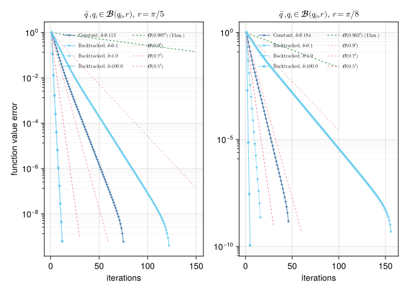

A Geodesically Convex Example on the Sphere
Paula John 2026-06-15
Introduction
In this example we compare the Convex Riemannian Proximal Gradient (CRPG) method [BJJP25a] with both a constant and a backtracked step size strategy on the sphere. This example reproduces the results from [BJJP25a], Section 6.2.
using PrettyTables
using BenchmarkTools
using CSV, DataFrames
using ColorSchemes, Plots, LaTeXStrings, CairoMakie, Chairmarks
using Random, LinearAlgebra, LRUCache
using ManifoldDiff, Manifolds, Manopt, ManoptExamples
import ColorSchemes.tol_vibrantThe Problem
Let $\mathcal M = \mathbb S^2$ be the $2$-dimensional hyperbolic space.
Let $g \colon \mathcal M \to \mathbb R$ be defined by
\[g(p) = \frac{1}{2} \sum_{j = 1}^N w_j \, \mathrm{dist}(p, q_j)^2,\]
where $w_j$, $j = 1, \ldots, N$ are positive weights such that $\sum_{j = 1}^N w_j = 1$, and $\{q_1,\ldots,q_N\} \in \mathcal M$ denote $N = 1000$ Gaussian random data points.
Observe that the function $g$ is geodesically convex with respect to the Riemannian metric on $\mathcal M$ on balls of radius smaller than $\frac{\pi}{2}$.
Let now $\bar q$ be a given point, and let $h \colon \mathcal M \to \mathbb R$ be defined by
\[h(p) = \tau \mathrm{dist}(p, \bar q),\]
for some $\tau > 0$. We define our total objective function as $f = g + h$. Notice that this objective function is also geodesically convex with respect to the Riemannian metric on $\mathcal M$. The goal is to find the minimizer of $f$ on $\mathcal M$.
Numerical Experiment
We initialize the experiment parameters, as well as some utility functions.
random_seed = 42
dims = [100, 500, 1000, 5000]
num_tests = 10
N = 1000 # Number of points
τ = 0.1 # weight parameter
max_it = 1000
stop = 1e-5
min_stepsize_bt = 1e-8
contraction_factor = 0.5
warm_start_factor = 2.0
# Choose a radius < pi/4
# The smaller the diameter of our set, the larger we can choose λ
radius = pi/6First we define the objective and related quantities
# Objective, gradient, and proxes
_g(S, p, qs) = sum(distance(S, p, qk)^2 for qk in qs) / (2 * length(qs))
get_g(qs) = (S, p) -> _g(S, p, qs)
#
get_h(q_bar, τ) = (S, p) -> τ * distance(S, p, q_bar)
#
_grad_g(S, p, qs) = -sum(log(S, p, qk) for qk in qs) / length(qs)
get_grad_g(qs) = (S, p) -> _grad_g(S, p, qs)
#
function _prox(S, λ, p, q_bar, τ)
if distance(S,p,q_bar) <= λ*τ
return q_bar
end
V = log(S,p,q_bar)
return exp(S, p, λ * τ * V/norm(V))
end
get_prox(q_bar, τ) = (S, λ, p) -> _prox(S, λ, p, q_bar, τ)
#and then generate the problem data
# Generate points and data
function generate_point(S, anchor, radius)
X = rand(S; vector_at = anchor)
return exp(S, anchor, rand()*radius*X/norm(X))
end
function generate_data(S, radius; N=1000)
anchor = rand(S)
start = generate_point(S, anchor, radius)
q_bar = generate_point(S, anchor, radius)
qs = [generate_point(S, anchor, radius) for i in 1:N]
return start, q_bar, qs
endgenerate_data (generic function with 1 method)We now define some functions related to the stepsize selection
# Stepsize calculation
get_λ_δ(α1, α2, αg, δ) = (sqrt(4*(α2 - α1)^2 + 1/(2 + δ)^2 * αg^2) - 2 * (α2 - α1)) / (2 * αg^2)
get_ζ_δ(δ) = pi/(2 + δ) * cot(pi/(2 + δ))
#
function get_const_stepsize(radius, τ)
# α1 ≤ h(p) ≤ α2 ∀p ∈ B(anchor, radius)
α1 = 0.0
α2 = τ * 2 * radius
# ||grad_g(p)|| ≤ αg ∀p ∈ B(anchor, radius)
αg = 2 * radius
Lg = 1.0
# Compute optimal δ for constant stepsize
δ_grid = 0.0:0.001:0.4
vals = [min(get_λ_δ(α1, α2, αg, δ),get_ζ_δ(δ)/Lg) for δ in 0.0:0.001:0.4]
λ_const, max_idx = findmax(vals)
return λ_const, δ_grid[max_idx]
endget_const_stepsize (generic function with 1 method)Since the stepsizes are independent of the dimension, we define them here, in conjunction with the parameter $\delta$ used for the backtracking
λ_const, δ = get_const_stepsize(radius, τ)
δ_bt = 1.0
λ_init = 10 * λ_const1.4758225181520177Before running the experiments, we initialize data collection functions that we will use later
# Header for the dataframe
column_names = [
"Dim" => Int64[],
"Stepsize" => Float64[],
"Time" => Float64[],
"Iterations" => Int64[],
"Objective" => Float64[]
]
column_labels = [
:Dimension,
:Stepsize,
:Time,
:Iterations,
:Objective,
]
df_const = DataFrame(column_names, makeunique=true)
df_bt = DataFrame(column_names, makeunique=true)function export_dataframes(
M,
records,
times,
)
B1 = DataFrame(;
Dimension=manifold_dimension(M),
Iterations_1=maximum(first.(records[1])),
Time_1=times[1],
Cost_1=minimum([r[2] for r in records[1]]),
Iterations_2=maximum(first.(records[2])),
Time_2=times[2],
Cost_2=minimum([r[2] for r in records[2]]),
)
return B1
end
function write_dataframes(
B1,
results_folder,
experiment_name,
)
CSV.write(
joinpath(
results_folder,
experiment_name *
"-Comparisons.csv",
),
B1;
append=true,
)
endfor dim in dims
S = Manifolds.Sphere(dim)
time_bt = 0.0
time_const = 0.0
iterations_bt = 0
iterations_const = 0
objective_bt = 0.0
objective_const = 0.0
for i in 1:num_tests
Random.seed!(1520 + i)
start, q_bar, qs = generate_data(S, radius)
g = get_g(qs)
h = get_h(q_bar, τ)
f(S, p) = g(S, p) + h(S, p)
grad_g = get_grad_g(qs)
prox = get_prox(q_bar, τ)
rec_const = proximal_gradient_method(S, f, g, grad_g, start;
prox_nonsmooth=prox,
stepsize=ConstantLength(λ_const),
record=[:Iteration, :Iterate],
return_state=true,
stopping_criterion=StopAfterIteration(max_it)| StopWhenGradientMappingNormLess(stop)
)
bm_const = @benchmark proximal_gradient_method($S, $f, $g, $grad_g, $start;
prox_nonsmooth=$prox,
stepsize=ConstantLength($λ_const),
stopping_criterion=StopAfterIteration($max_it)| StopWhenGradientMappingNormLess($stop)
)
rec_CRPG_bt = proximal_gradient_method(S, f, g, grad_g, start;
prox_nonsmooth=prox,
stepsize=ProximalGradientMethodBacktracking(;
strategy=:convex,
initial_stepsize=λ_init,
stop_when_stepsize_less=min_stepsize_bt,
δ=δ_bt,
contraction_factor=contraction_factor,
warm_start_factor=warm_start_factor,
k_max=1.0,
),
record=[:Iteration, :Iterate],
return_state=true,
stopping_criterion=StopAfterIteration(max_it)| StopWhenGradientMappingNormLess(stop)
)
bm_bt = @benchmark proximal_gradient_method($S, $f, $g, $grad_g, $start;
prox_nonsmooth=$prox,
stepsize=ProximalGradientMethodBacktracking(;
strategy=:convex,
initial_stepsize=$λ_init,
stop_when_stepsize_less=$min_stepsize_bt,
δ=$δ_bt,
contraction_factor=$contraction_factor,
warm_start_factor=$warm_start_factor,
k_max=$(1.0),
),
stopping_criterion=StopAfterIteration($max_it)| StopWhenGradientMappingNormLess($stop)
)
it_const, res_const = get_record(rec_const)[end]
it_bt, res_bt = get_record(rec_CRPG_bt)[end]
t_const = median(bm_const).time/1e9
t_bt = median(bm_bt).time/1e9
objective_bt += f(S, res_bt)
objective_const += f(S, res_const)
time_bt += t_bt
time_const += t_const
iterations_bt += it_bt
iterations_const += it_const
end
push!(df_const, [
dim, λ_const, time_const/num_tests, iterations_const/num_tests, objective_const/num_tests
])
push!(df_bt, [
dim, λ_init, time_bt/num_tests, iterations_bt/num_tests, objective_bt/num_tests
])
endWe can take a look at how the algorithms compare to each other in their performance with the following tables. The first table showcases the algorithm run with a constant stepsize…
| Dimension | Stepsize | Time | Iterations | Objective |
|---|---|---|---|---|
| 100.0 | 0.147582 | 0.0231786 | 57.5 | 0.0775637 |
| 500.0 | 0.147582 | 0.102482 | 54.7 | 0.0632621 |
| 1000.0 | 0.147582 | 0.196127 | 61.8 | 0.0754969 |
| 5000.0 | 0.147582 | 0.534626 | 43.9 | 0.0618121 |
… while the second table showcases the algorithm run with a backtracked stepsize
| Dimension | Stepsize | Time | Iterations | Objective |
|---|---|---|---|---|
| 100.0 | 1.47582 | 0.0130627 | 21.1 | 0.0775637 |
| 500.0 | 1.47582 | 0.0538948 | 19.9 | 0.0632621 |
| 1000.0 | 1.47582 | 0.109934 | 22.4 | 0.0754969 |
| 5000.0 | 1.47582 | 0.335534 | 16.4 | 0.0618121 |
Test with different parameters
We now test CRPG on the same problem, but with different radii and different values of $\delta$. We start by introducing these parameters
radii = [pi/5, pi/8]
# (radius, algorithm, δ) → error vector
# algorithm = :CONST for constant stepsize
# :BT for back‑tracking
# δ is `missing` for the constant‑stepsize runs
global results = Dict{Tuple{Float64, Symbol, Union{Missing, Float64}}, Vector{Float64}}()Dict{Tuple{Float64, Symbol, Union{Missing, Float64}}, Vector{Float64}}()As well as a function to save the generated data
function export_dataframe(radius::Float64, algo::Symbol)
# 5.1 Filter the dictionary for the wanted radius & algorithm = :BT
bt_entries = [(δ, vec) for ((r, alg, δ), vec) in results
if r == radius && alg == algo]
sort!(bt_entries, by = x -> x[1]) # sort by delta
max_len = maximum(length(v) for (_, v) in bt_entries)
df = DataFrame(Iter = 1:max_len)
# Add one column per δ
for (δ, vec) in bt_entries
δ = round(δ, digits=3)
col_name = Symbol("delta$(δ)")
padded = vcat(vec, fill(NaN, max_len - length(vec)))
df[!, col_name] = padded
end
return df
end
function write_csv(df, out_path::String)
CSV.write(out_path, df; delim=",", writeheader=true)
endwrite_csv (generic function with 1 method)And now we run the different experiments
S = Manifolds.Sphere(500)
for radius in radii
Random.seed!(1520)
start, q_bar, qs = generate_data(S, radius; N = N)
h = get_h(q_bar, τ)
g = get_g(qs)
f = (S, p) -> g(S, p) + h(S, p)
grad_g = get_grad_g(qs)
prox = get_prox(q_bar, τ)
# constant stepsize
λ_const, δ_opt = get_const_stepsize(radius, τ)
δs_bt = [0.1, 1.0, 100.0]
λ_init = 10*λ_const
rec_const = proximal_gradient_method(S, f, g, grad_g, start;
prox_nonsmooth=prox,
stepsize=ConstantLength(λ_const),
record=[:Iteration, :Iterate],
return_state=true,
stopping_criterion=StopAfterIteration(max_it)| StopWhenGradientMappingNormLess(stop)
)
iters_const = get_record(rec_const, :Iteration, :Iterate)
prepend!(iters_const, [start])
obj_const = [f(S, it) for it in iters_const]
err_const = [obj_const[i] - obj_const[end] for i in 1:length(obj_const)-1]
# Normalise by the first error
err_const ./= err_const[1]
results[(radius, :CONST, δ_opt)] = err_const
# Backtracking
for δ_bt in δs_bt
rec_bt = proximal_gradient_method(S, f, g, grad_g, start;
prox_nonsmooth=prox,
stepsize=ProximalGradientMethodBacktracking(;
strategy=:convex,
initial_stepsize=λ_init,
stop_when_stepsize_less=min_stepsize_bt,
contraction_factor=contraction_factor,
warm_start_factor=warm_start_factor,
δ=δ_bt,
k_max=1.0,
),
record=[:Iteration, :Iterate],
return_state=true,
stopping_criterion=StopAfterIteration(max_it)| StopWhenGradientMappingNormLess(stop)
)
iters_bt = get_record(rec_bt, :Iteration, :Iterate)
prepend!(iters_bt, [start])
obj_bt = [f(S, it) for it in iters_bt]
err_bt = [obj_bt[i] - obj_bt[end] for i in 1:length(obj_bt) - 1]
err_bt ./= err_bt[1]
results[(radius, :BT, δ_bt)] = err_bt
end
endWe now save the results of the experiments
Lastly, we plot the rate of decay of the function values for these experiments
function plot_sphere_results(
df_02_const, df_02_bt,
df_0125_const, df_0125_bt,
)
tol_blue = colorant"#4477AA"
tol_green = colorant"#228833"
tol_cyan = colorant"#66CCEE"
tol_red = colorant"#EE6677"
ref_rates = (0.9, 0.7, 0.5)
ref_alphas = (0.5f0, 0.7f0, 0.9f0)
bt_markers = (:utriangle, :dtriangle, :circle)
bt_lws = (1.0, 0.6, 1.0)
configs = [
(
df_const = df_02_const,
df_bt = df_02_bt,
c_delta = "delta0.113",
bt_deltas = ("delta0.1", "delta1.0", "delta100.0"),
thm_rate = 0.987,
thm_xend = 150,
ref_xends = (150, 60, 30),
subtitle = L"\bar{q}, q_i \in \mathcal{B}(q_0, r),\; r = \pi/5",
),
(
df_const = df_0125_const,
df_bt = df_0125_bt,
c_delta = "delta0.184",
bt_deltas = ("delta0.1", "delta1.0", "delta100.0"),
thm_rate = 0.963,
thm_xend = 100,
ref_xends = (100, 60, 30),
subtitle = L"\bar{q}, q_i \in \mathcal{B}(q_0, r),\; r = \pi/8",
),
]
fig = Figure()#size = (1280, 720))
for (col, cfg) in enumerate(configs)
ax = Axis(fig[1, col];
title = cfg.subtitle,
xlabel = "iterations",
ylabel = col == 1 ? "function value error" : "",
yscale = log10,
yminorticksvisible = true,
yminorgridvisible = true,
yminorticks = IntervalsBetween(8),
)
iters_c = cfg.df_const[!, "Iter"]
δ_c = split(cfg.c_delta, "delta")[2]
scatterlines!(ax, iters_c, cfg.df_const[!, cfg.c_delta];
color = tol_blue, linewidth = 1.0,
marker = :star4, markersize = 6,
label = latexstring("\\text{Constant},\\;\\delta\\!=\\!$(δ_c)"), #L"\text{Constant},\;\delta\!=\!$(δ_c)",
)
lines!(ax, 1:cfg.thm_xend, cfg.thm_rate .^ (1:cfg.thm_xend);
color = tol_green, linewidth = 1.0, linestyle = :dash,
label = latexstring("\\mathcal{O}($(cfg.thm_rate)^k)\\;\\text{(Thm.)}"), # L"\mathcal{O}($(cfg.thm_rate)^k)\;\text{(Thm.)}",
)
iters_bt = cfg.df_bt[!, "Iter"]
for (delta, mk, rr, x_end, alpha, lw) in zip(
cfg.bt_deltas, bt_markers, ref_rates, cfg.ref_xends, ref_alphas, bt_lws
)
δ_v = split(delta, "delta")[2]
scatterlines!(ax, iters_bt, cfg.df_bt[!, delta];
color = tol_cyan, linewidth = lw,
marker = mk, markersize = 6,
label = latexstring("\\text{Backtracked},\\;\\delta\\!=\\!$(δ_v)"), # L"\text{Backtracked},\;\delta\!=\!$(δ_v)",
)
lines!(ax, 1:x_end, rr .^ (1:x_end);
color = (tol_red, alpha), linewidth = 1.0, linestyle = :dash,
label = latexstring("\\mathcal{O}($(rr)^k)"), # L"\mathcal{O}($(rr)^k)",
)
end
axislegend(ax;
position = :ct,
nbanks = 2,
framevisible = false,
labelsize = 8,
rowgap = -3,
)
end
return fig
end
fig = plot_sphere_results(df_02_const, df_02_bt, df_0125_const, df_0125_bt)display(fig)
CairoMakie.Screen{IMAGE}This is in line with the convergence rates of the CRPG method in the geodesically convex setting, as shown in [BJJP25a], Theorem 4.10.
Technical details
This tutorial is cached. It was last run on the following package versions.
Status `~/Repositories/Julia/ManoptExamples.jl/examples/Project.toml`
[6e4b80f9] BenchmarkTools v1.8.0
[336ed68f] CSV v0.10.16
[13f3f980] CairoMakie v0.15.13
[0ca39b1e] Chairmarks v1.3.1
[35d6a980] ColorSchemes v3.31.0
[5ae59095] Colors v0.13.1
[a93c6f00] DataFrames v1.8.2
[31c24e10] Distributions v0.25.129
[e9467ef8] GLMakie v0.13.13
[5c1252a2] GeometryBasics v0.5.11
[4d00f742] GeometryTypes v0.8.5
[7073ff75] IJulia v1.34.4
[682c06a0] JSON v1.6.1
[8ac3fa9e] LRUCache v1.6.2
[b964fa9f] LaTeXStrings v1.4.0
[d3d80556] LineSearches v7.7.1
[ee78f7c6] Makie v0.24.13
[7351309b] ManifoldAsymptote v0.1.0
[af67fdf4] ManifoldDiff v0.4.5
[9d80ff41] ManifoldMakie v0.1.2
[1cead3c2] Manifolds v0.11.28
[3362f125] ManifoldsBase v2.5.0
[0fc0a36d] Manopt v0.6.2
[5b8d5e80] ManoptExamples v0.1.20 `..`
[51fcb6bd] NamedColors v0.2.3
[6fe1bfb0] OffsetArrays v1.17.0
[91a5bcdd] Plots v1.41.6
[08abe8d2] PrettyTables v3.4.2
[6099a3de] PythonCall v0.9.35
[f468eda6] QuadraticModels v0.9.16
[731186ca] RecursiveArrayTools v4.3.4
[1e40b3f8] RipQP v0.7.0This tutorial was last rendered July 20, 2026, 15:28:56.
Literature
- [Bac14]
- M. Bačák. Computing medians and means in Hadamard spaces. SIAM Journal on Optimization 24, 1542–1566 (2014), arXiv:1210.2145.
- [BJJP25a]
- R. Bergmann, H. Jasa, P. J. John and M. Pfeffer. The Intrinsic Riemannian Proximal Gradient Method for Convex Optimization, preprint (2025), arXiv:2507.16055.